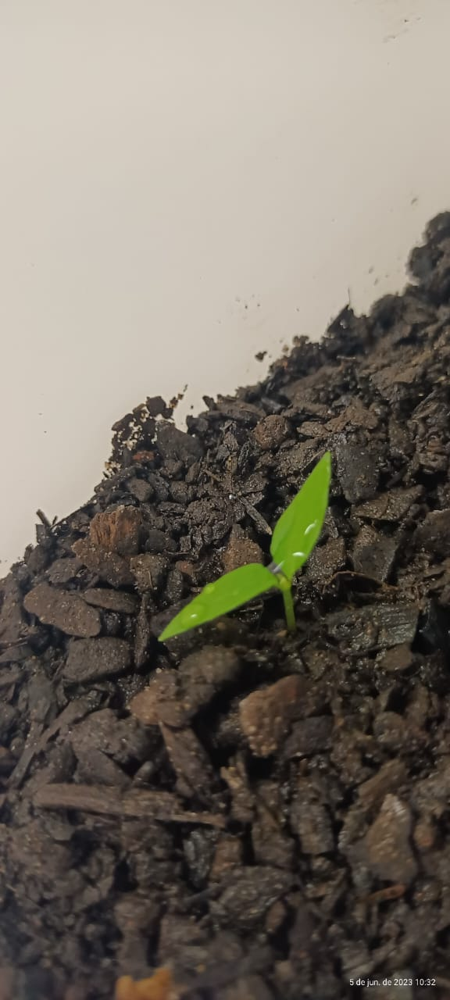
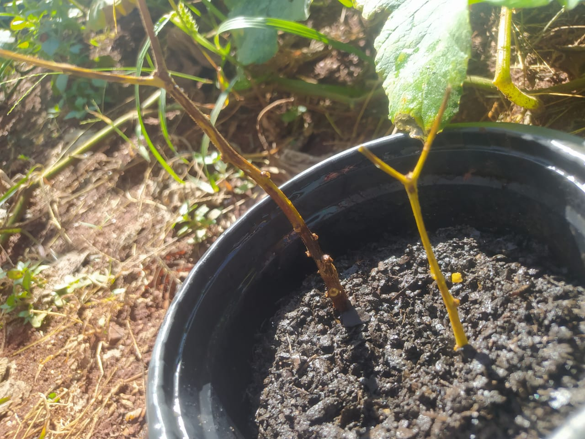
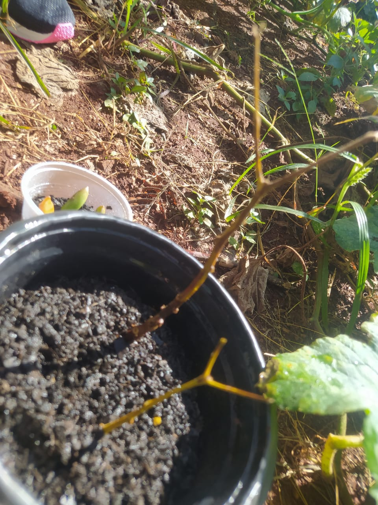

.jpg)
PIMENTA BIQUINHO.
- Desenvolvimento da Planta
- Artigos Científicos
Nosso grupo escolheu (Capsicum chinese) também conhecida como pimenta biquinho porque de todas as outras plantas ela é a mais fácil de se trabalhar pois ela é de fácil acesso não é muito grande também muito mais prático de trabalhar com ela e o nosso grupo teve mais afinidade com ela.
Tendo em vista que a pimenta biquinho (Capsicum chinese) foi a escolha mais propensa para as observações de variáveis como : enraizamento , crescimento , luminosidade , tipos de solos , sua adaptação aos diferentes tipos de solos e por fim não tem um crescimento acelerado.
Na semana 01 do dia 15 percebemos que nossa pimenta biquinhos estavam com pulgões. Fizemos a retirada com água , vinagre e detergente molhádo no algodão.Fizemos ánalise de propagação vegetativa que dentre elas escolhemos a estaquia, por ser mais facil e adequado ao nosso ambiente escola e área pequena.
.jpg)
Na Segunda semana dia 22/05 não fomos ao laboratório mas aprendemos sobre a clonagem cujo obejetivo é reprodução assexuada.Começamos então cortar duas garrafas pet ao meio para transportar as mudas pequenhas com terra limpa.Em três copos plasticos acrescentamos terra limpa, e neles plantamos no total dez suculentas. Em outras garrafa pet colocamos tambem um bambu de 33,5cm em terra limpa jogamos enraicador em tudo que plantamos para que possa crescer raíces e deixamos no sol.Por fim Fizemos as marcações do numero do grupo e data em todos os potes
Hoje dia 29/05 Subimos para o laboratória, tiramos os pulgões encontrados na pimenta, plantamos algumas sementes,pois todas as mudinhas haviam morrido. Podamos as pimentas retirando as parte mortas. E depois borrifamos com agua todas elas

No relatório da semana 04, subimos ao laboratório, aguamos a muda da pimenta biquinho e a nossa suculenta. Tiramos algumas fotos e analisamos se obteve mudança. Fomos aonde havíamos deixado a planta para tomar sol e verificar as mudanças, e as folhas da nossa planta ``Pimenta Biquinho`` havia caído todas e o galho secou um pouco , as mudinhas plantadas através da semente da pimenta biquinho, morreram todas, e as nossa suculentas não enraizaram. Controlamos a luminosidade, aguamos a plantas e descartamos tudo oque estava morto
 